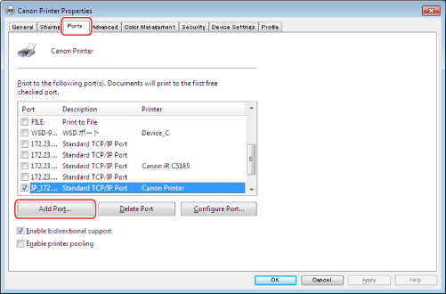
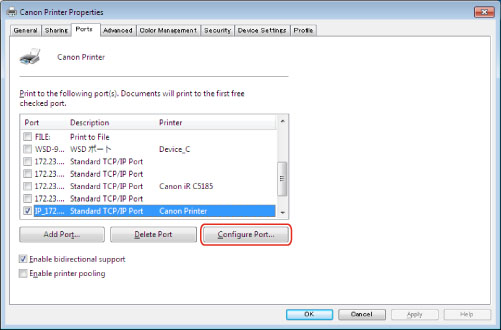
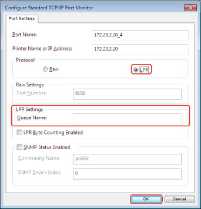

Changing a Standard TCP/IP Port
You can change the printer port used by a device connected to a network to a standard TCP/IP port after installing the driver. The following procedure describes how to set a standard TCP/IP port when using the LPR or Raw protocol.
|
IMPORTANT
|
|
Be sure to log on as a member of Administrators when you start the computer.
|
|
NOTE
|
|
LPR is the protocol commonly used for TCP/IP.
Raw is a protocol that can be used with Windows. It transmits data at a higher speed than LPR.
|
1.
Install the driver.
For details, refer to "
Port Setting Installation."
You can set a temporary port (such as [LPT1]).
2.
Select [Devices and Printers] from the [

] (Start) menu.
If you are using Windows 8/8.1/Server 2012/Server 2012 R2, from the desktop, display the charm bar to the right of the screen, and select [

Settings] - [Control Panel] - [Devices and Printers].
If you are using Windows Vista, select [Control Panel] - [Printers] from the [
] (Start) menu.
3.
Right-click the icon for your device → click [Printer properties] (or [Properties]).
4.
Click the [Ports] tab → [Add Port].

5.
In the [Printer Ports] dialog box, select [Standard TCP/IP Port] from [Available port types] → click [New Port].
6.
Click [Next] in the [Add Standard TCP/IP Printer Port Wizard].
7.
Enter the device name or IP address in [Printer Name or IP Address] (or [Hostname or IP address]) → click [Next].
For the name of the device, use the name by which the device is known on the network.
The content of [Port Name] is automatically entered. You can change it if required.
If the [Additional Port Information Required] (or [Additional port information required]) dialog box is displayed, follow one of the procedures below.
Return to the previous screen in the wizard → re-enter the information for [Printer Name or IP Address] (or [Hostname or IP address]) → click [Next].
Select [Standard] for [Device Type] → [Canon Network Printing Device with P9100] from the drop-down list → click [Next].
|
NOTE
|
|
The type of device you select from the [Standard] drop-down list under [Device Type] in the [Additional Port Information Required] (or [Additional port information required]) dialog box depends on the printer model you are using, and may differ from the above setting.
|
8.
Click [Finish].
9.
Click [Close] in the [Printer Ports] dialog box.
10.
Click [Configure Port].

11.
Set the port.
When using LPR:
Select [LPR] for [Protocol] → enter the printer's queue name in [Queue Name] under [LPR Settings] → click [OK].

You can specify any one of the following print queues for [Queue Name]:
LP: Outputs according to the spool setting of the device. This setting is normally used.
SPOOL: Always outputs after spooling to the hard disk, regardless of the device settings.
DIRECT: Always outputs without spooling to the hard disk, regardless of the device settings.
When using Raw:
Select [Raw] for [Protocol] → click [OK].
12.
Click [Close].